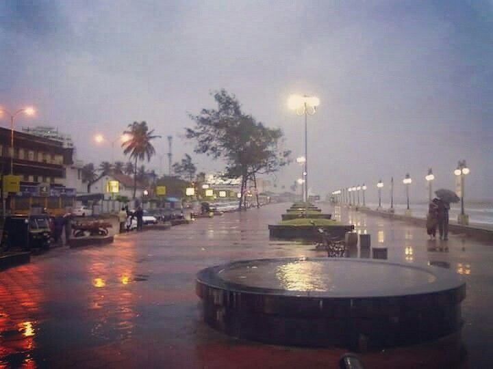
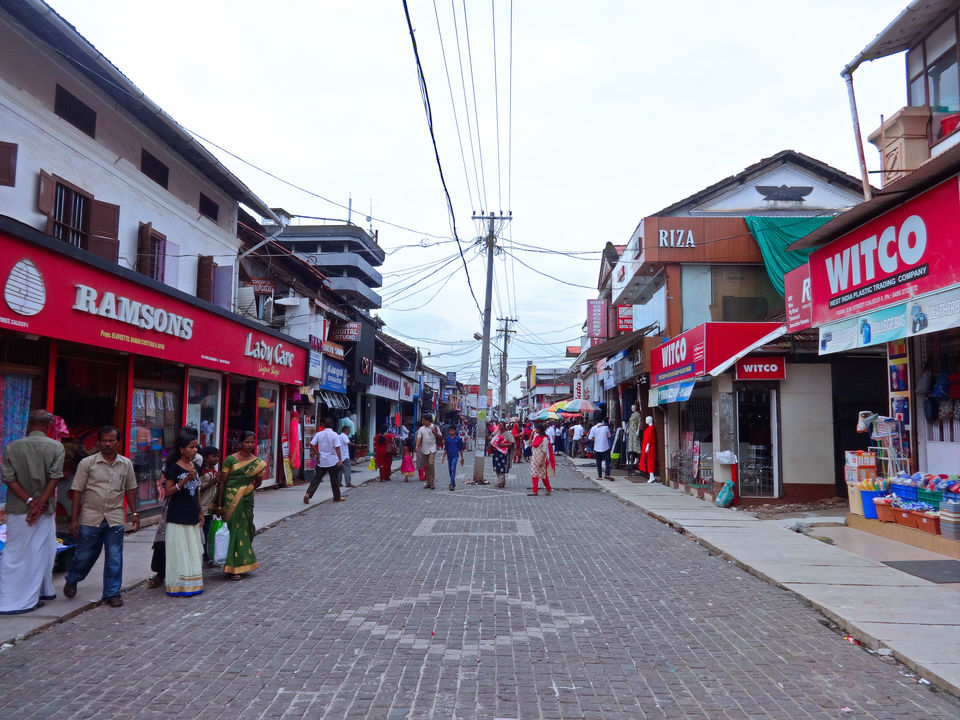
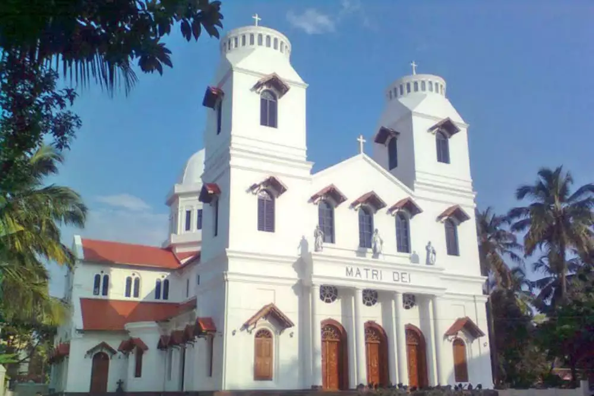
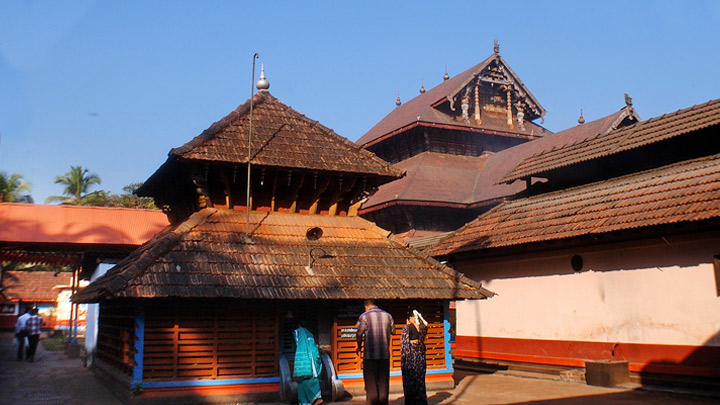
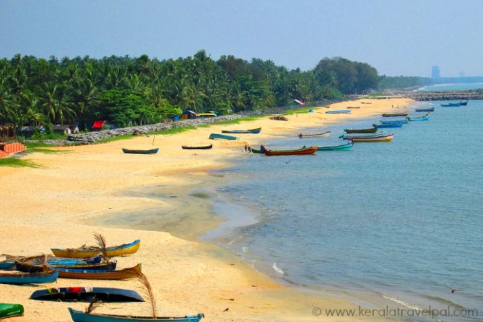
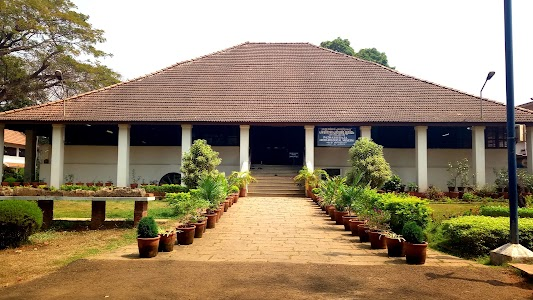
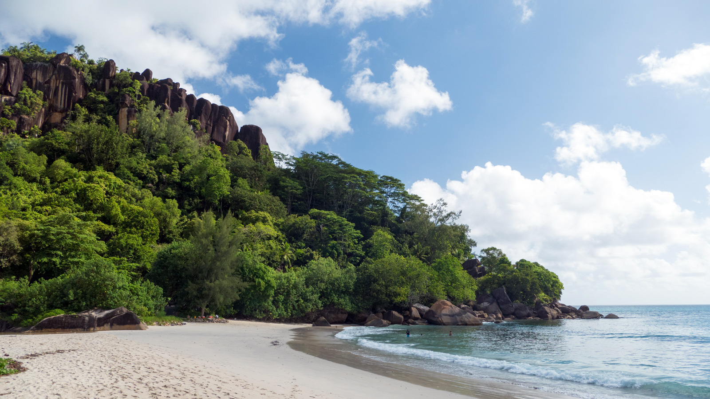

PLACES TO VISIT IN KOZHIKODE
Beach Road

A tract of 3 km across the beach, this avenue remains deserted and quiet during the day. The aquarium at the North end of the road draws visitors occasionally. The place comes alive in the evening when people venture out for a stroll across the beach. Vendors selling peanuts, snacks and ice creams can be seen. You can also take a walk across the beach road course to the Dolphin’s Point during dawn to get a glimpse of the leaping dolphins.
Mitthayi Theruvu

The street selling an assortment of sweets is aptly named. Mitthayi Theruvu meaning the Sweet Meat Street, is the place to be if you are in a mood to indulge your sweet tooth. A chock-a-block, with shops selling everything from sweets to snacks, Mitthayi Theruvu is specially known for its Halwa, a glutinous sweet dish.
Mishkal Mosque

The mosque reminiscent of Kerala’s Temple Architecture is a grand affair built out of wood, supported on 24 carved pillars. The mosque with 47 doors has intricately carved ceilings, Gopuram style arches and unlike other mosques, does not have minarets. The 700 year old mosque was constructed by Nakhooda Mishkal, a rich Arab businessman and ship owner.
Mother of God Cathedral

The 18th century Gothic Cathedral, believed to have been designed by Italian architects, has a 200 year old portrait of St Mary. The cemetery adjoining the church holds old gravestones such as that of the first Catholic missionary of Kozhikode, Rev Pedro de Covilhany, who arrived here on May 20, 1498.
Tali Temple

A 14th century temple built by the Zamorin King, Manavikraman, this site is located about one and a half kilometers east of Manachira Square. The annual cultural event, Revathi Pattathanam draws a number of pilgrims to the temple. Elaborate wooden carvings on the roof and intricate bas relief on the walls of the sanctorum are proof to the artistic abilities of our artisans.
Kappad Beach

It is believed that the Portuguese explorer Vasco Da Gama landed on this beach with his team of explorers, thus giving it a place on the world map. The beach, calm and quiet, is an ideal place to relax. The best way to visit this beach is by taking a backwater cruise.
Pazhassiraja Museum and Art Gallery

Earlier known as the East Hill Bungalow, the Pazhassiraja Museum was built in 181. The museum has on display, a rare collection of murals, earthenware, models of temples, coins, umbrella stones, burial urns and crypts. The art gallery nearby, exhibits paintings by Raja Ravi Varma and his uncle Raja Rama Varma.
Mahe

A quaint little town with a distinctively French flavour, Mahe is located 58 km north of Kozhikode and intersected by the River Mahe. The town was earlier known as ‘Mayyazhi’ but was renamed after ‘Mahe’ after the Frenchman who captured it. A union territory, Mahe is free of the strict government control on alcohol and has a number of wine shops. The Malayala Kalagramam, a centre of fine arts that teaches various forms of dance, music, sculpting, yoga and meditation is a sought after destination for those willing to learn the arts. St Teresa’s Church, one of the oldest churches of the Malabar region, is another place you must visit.
Thusharagiri

Snuggled cozily in the Western Ghats, are the gurgling waterfalls of Thusharagiri. Thushargiri, literally means the snow capped mountains. The three waterfalls on the backdrop of the Western Ghats provide an exhilarating and spellbinding sight to the visitor, in its full glory from September to November. Two streams originating from the Western Ghats meet here to form the Chalippuzha River. The river diverges into three waterfalls creating a snowy spray, which gives the name, 'Thusharagiri'. Of the three, the highest waterfall is Thenpara, which falls from an altitude of 75 metres.